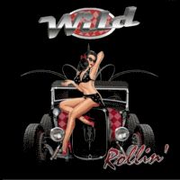

Wild - Rollin' (EP, 2014)
01 - Jitterbop Baby (2:00)
02 - Baby Lets Play House (2:24)
03 - Folsom Prison Blues (3:03)
04 - I Fought The Law (2:26)
05 - F.B.I (2:30)
© Wild :: [Digital]
Notes
United Kingdom.
Paul Gallacher - Guitar, Vocals
Hugh Robertson-Payne - Double bass, Vocals (lead vocal on "Jitterbop Baby")
Glenn Hallam - Drums, Vocals
reference information: bandcamp page
Review
316/366 (Project 366)
Wild rollin' pushy Rockabilly. All five songs on the EP are cover versions of the classic (fifties, early sixties) rockabilly and some rockin' and rollin' songs, including instrumental. I can't say that these covers are worse or better than the original performance. They are just different things. These tracks with much more punchy tone and mild punky sound. If you've never heard the originals, then these songs are definitely stunning. By arrangements - it is nice and energetic tunes. But this is not always enough. Nevertheless, the musicians performed quite well and enthusiastically.